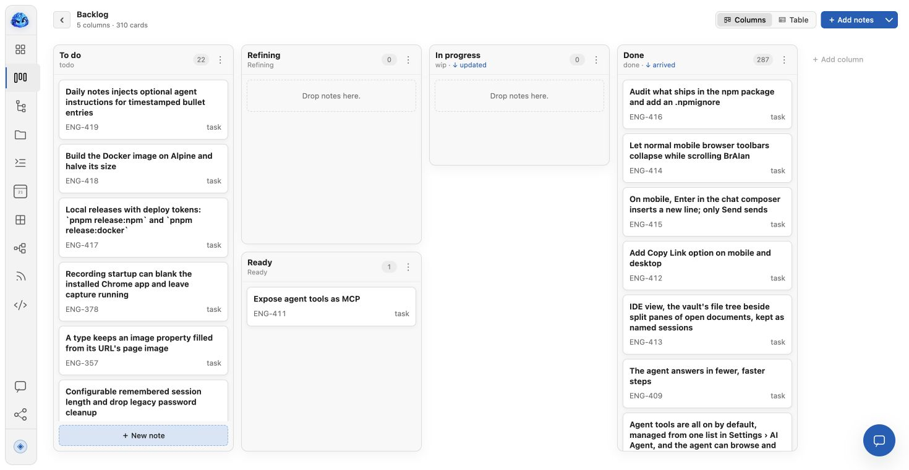
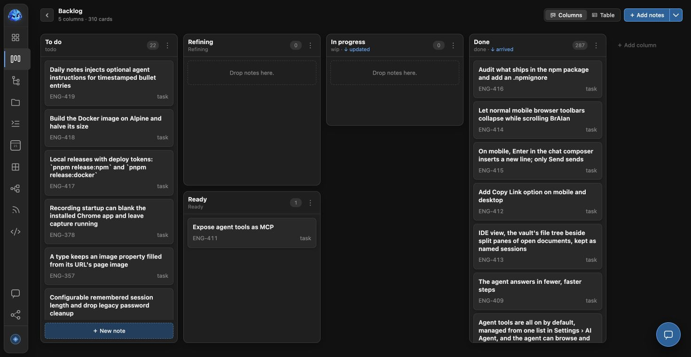
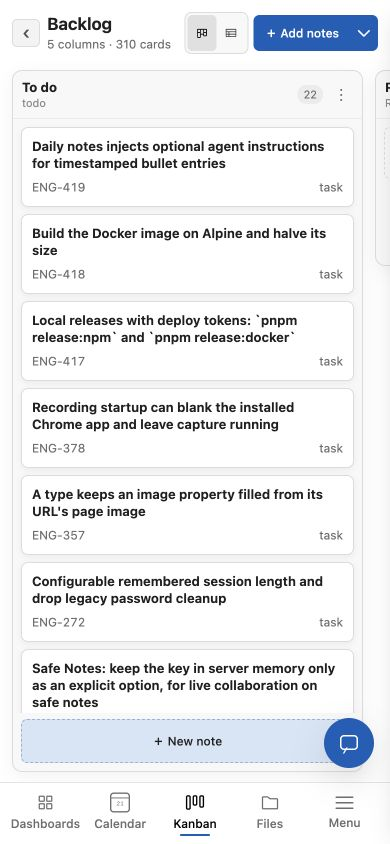
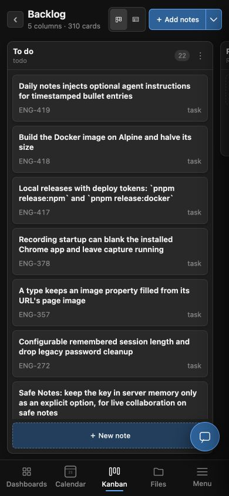

<!doctype html><html lang="en"><meta charset="utf-8"><title>BrAIan — Kanban · Light and dark</title><style>
*{box-sizing:border-box}body{margin:0;background:#0e1525;color:#f3f7ff;font-family:Arial,sans-serif}.art{width:1470px;height:761px;position:relative;overflow:hidden;background:radial-gradient(ellipse at 20% 70%,#29385a,transparent 55%),radial-gradient(ellipse at 95% 30%,#25385f,transparent 45%),#101727}.kicker{position:absolute;top:34px;left:58px;font-size:12px;letter-spacing:3px;color:#9dbaff}.headline{position:absolute;top:63px;left:56px;font-size:37px;letter-spacing:-1.5px;margin:0}.stamp{position:absolute;right:58px;top:42px;border:1px solid #617391;border-radius:30px;padding:12px 20px;font-size:13px;color:#d5e2ff}.laptop{position:absolute;top:150px;left:54px;width:1040px;padding:12px 12px 26px;background:linear-gradient(130deg,#4c5360,#141920 30%,#303845);border:1px solid #667080;border-radius:23px 23px 10px 10px;box-shadow:0 35px 90px #0009}.screen{position:relative;aspect-ratio:1470/761;overflow:hidden;border-radius:9px;background:#eee}.screen img{position:absolute;inset:0;width:100%;height:100%;object-fit:fill}.screen .dark{clip-path:inset(0 0 0 50%)}.divide{position:absolute;top:0;bottom:0;left:50%;width:2px;background:#9fbeff;box-shadow:0 0 12px #0008}.theme-label{position:absolute;top:15px;padding:7px 12px;border-radius:20px;font-size:10px;font-weight:700;letter-spacing:1px;box-shadow:0 3px 10px #0002}.light-label{left:16px;color:#17213b;background:#f7f9ff}.dark-label{right:16px;background:#17213b;color:#e5edff;border:1px solid #6b83ae}.base{position:absolute;bottom:-13px;left:-30px;width:1100px;height:16px;background:linear-gradient(#9ba3b1,#5b6370);border-radius:3px 3px 50% 50%;box-shadow:0 8px 14px #0005}.base:after{content:'';display:block;margin:auto;width:165px;height:5px;background:#3a4250;border-radius:0 0 9px 9px}.phone{position:absolute;top:280px;width:184px;height:396px;background:#15191e;border:2px solid #79818d;border-radius:31px;padding:7px;box-shadow:0 18px 40px #0009;overflow:hidden}.phone img{width:166px;height:378px;object-fit:fill;border-radius:22px;display:block}.phone:after{content:'';position:absolute;top:12px;left:64px;width:56px;height:13px;border-radius:20px;background:#14171d}.phone.light{left:1048px;transform:rotate(-5deg);z-index:2}.phone.dark{left:1240px;top:303px;transform:rotate(5deg);z-index:3}.phone-label{position:absolute;top:735px;font-size:11px;letter-spacing:1px;color:#b7c8e5}.phone-label.left{left:1080px}.phone-label.right{left:1280px}.footer{position:absolute;bottom:8px;left:58px;font-size:12px;color:#adbfde}.footer strong{color:#fff;margin-right:18px;font-size:16px}.screen,.phone{isolation:isolate}
</style><main class="art"><span class="kicker">LIGHT & DARK / Kanban</span><h1 class="headline">Your plan, in a different light.</h1><span class="stamp">Same vault. Your theme.</span><div class="laptop"><div class="screen"><span class="divide"></span><span class="theme-label light-label">LIGHT</span><span class="theme-label dark-label">DARK</span></div><div class="base"></div></div><div class="phone light"></div><div class="phone dark"></div><span class="phone-label left">LIGHT MOBILE</span><span class="phone-label right">DARK MOBILE</span><div class="footer"><strong>BrAIan</strong> Real app captures · Desktop & mobile</div></main></html>